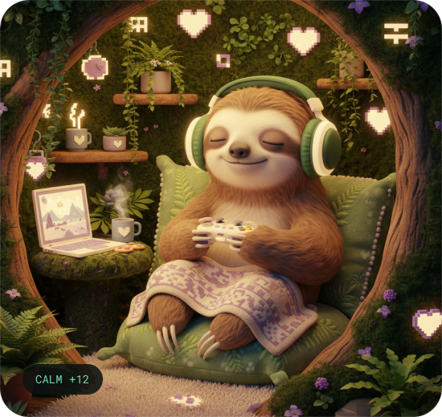

© 2026 SAGESLOTH.GG
⬤ SAVE POINT AVAILABLE
Tiny mindfulness quests for gamers who want steadier focus, softer tilt, and better breaks— without leaving the party.

CHOOSE YOUR RESET
No streaks. No guilt. just a useful pause between rounds.
QUEST 01 / RESPAWN BREATH
02:14
Inhale while the ring grows.
BEGINNER FRIENDLY
Clear prompts, visible timers, and zero mystical jargon. Learn one practical skill at a time, then take it straight back into play.
✓ AUDIO OPTIONAL ㅤ ✓ KEYBOARD FRIENDLYㅤㅤㅤㅤㅤㅤㅤㅤ ✓ NO ACCOUNT NEEDED ㅤ ✓ PAUSE ANYTIME
PLAYER NOTE
“I used Respawn Breath after a rough ranked loss. Three minutes later I was laughing with my squad instead of rage-queueing.”
— Mina, support main & recovering button-masher
One tiny reset, one player story, no spam.
© 2026 SAGESLOTH.GG